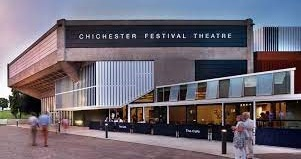
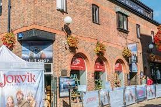

Lecture 9
Culture and Arts in Britain
Art has remained part of British culture and comprises works in different artistic movements. Compared with fifty years ago, far more people today visit art galleries, go to the theatre and attend concerts. Nevertheless, the fact remains that most British people prefer their sport, their television and videos, and their other free-time activities to anything ‘cultural’, but the appreciation of art in Britain is evidenced by its many art galleries.
Visual Arts
Painting and sculpture are not as widely popular as music in Britain. There is a general feeling that you have to be a specialist to appreciate them, especially if they are contemporary. Small private art galleries, where people might look at paintings with a view to buying them, are rare. Nevertheless, London is one of the main centres of the international collector’s world. The two major auction houses of Sotheby’s and Christie’s are world-famous.
The earliest visual arts in Britain were most likely ornamentations on ordinary objects. Scandinavian wood carvings date from the 8th century, after Scandinavians came to Britain in considerable numbers. Decorative arts were particularly notable in early Christian Ireland, especially from the 6th to the 9th century. Irish missionaries, who were preaching Catholicism in Europe during this time period, brought Celtic metalworking techniques and stone carvings to Britain.
Huge stone crosses, exquisitely decorated, still stand in northern Britain and Ireland. Painting was confined to illuminated manuscripts – bright and exactingly detailed miniature paintings in prayer books that were produced by monks. This art continued through the Middle Ages because books were still illustrated by hand, even after printing was invented in the mid-15th century. During the Middle Ages, the Catholic Church was the chief patron of artists and sculptors, who were hired to decorate the massive cathedrals as well as local churches.
In early modern times portrait painting became important, particularly for monarchs interested in marriage opportunities abroad, and paintings of prospective spouses were often sent before making marital arrangements. Noted artists who produced paintings in early modern England were foreigners, such as German artist Hans Holbein the Younger in the 16th century and Flemish painter Sir Anthony van Dyck in the 17th century. English artists came to excel at miniature painting in the same century.
By the 18th century a distinctive British style began to emerge that tended to be brighter and livelier than the darker European canvases. British artists also stayed within the confines of neoclassical rationalism; that is, their art exhibited the values of order, logic, and proportion. The etchings and paintings of William Hogarth show satirical scenes from ordinary life and were enormously popular.
In the late 18th and early 19th centuries romantic painters appeared who emphasized the beauties and forces of nature. This is seen in the landscapes of John Constable and J. M. W. Turner, whose paintings directly influenced French impressionism. Noted poet William Blake was also a painter, and he illustrated his poems and stories with imaginative drawings.
Scores of artists in the Victorian era painted specifically for middle-class tastes. Sir Edwin Henry Landseer was noted for paintings that often feature animals, such as dogs or wildlife. Frederick Leighton painted mythological and historical subjects and illustrated popular magazines. William Powell Frith painted large, busy canvases in the popular style known as genre painting, which realistically depicted scenes from everyday life. Sophie Anderson painted sweet children.
In reaction to Victorian art styles and middle-class materialism, with its concern for worldly objects, several painters came together in 1848 and founded a movement called the Pre-Raphaelite Brotherhood. They sought to return to an earlier, simpler time, and their works exhibited the brightness, colour, and purity credited with founding the Arts and Crafts movement, which became influential in furniture, decorative items, and textile designs.
by Aubrey Beardsley
Toward the end of the Victorian era, art nouveau (literally, “new art”) developed out of the Arts and Crafts movement. Art nouveau is a decorative style with strong elements of fantasy. It borrowed motifs from sources as varied as Japanese prints, Gothic architecture, and the symbolic paintings of William Blake. This style, which became popular in Europe, influenced many art forms as well as architecture and interior design. The art nouveau illustrations of Aubrey Beardsley, in particular, are still popular. Artists and architects from the Glasgow School were noted for their work in both the Arts and Crafts and art nouveau styles.
by Barbara Hepworth
During the early-20th century impressionism became “fully assimilated” into British art, alongside with vorticism and modernism. Britain produced many artists in the 20th century. They include sculptors Jacob Epstein and Dame Elisabeth Frink, who both produced monumental figures, as well as abstract sculptors Barbara Hepworth and Henry Moore. Painters include Paul Nash, a war artist who painted scenes of landscapes and battles during both world wars; Sir Stanley Spencer, whose works often used biblical themes; and Graham Sutherland, who developed a unique style of landscape painting. After World War II such artists as Francis Bacon, whose paintings are steeped in the horrific, and David Hockney, who also designed opera sets, became noted for their unique achievements.
Theatre
The theatre has always been very strong in Britain. In the 20th century Britain has remained one of the world’s greatest centres for drama. Britain’s many theatres attract crowds from all over the world. This is due in large measure to the high calibre of British actors, including Sir Laurence Olivier, Sir Michael Redgrave, Sir John Gielgud, Sir Alec Guinness, Sir Rex Harrison, Richard Burton, Glenda Jackson, Vanessa Redgrave, Kenneth Branagh, and Emma Thompson. The quality of the plays is another important factor. In the early 20th century, noted playwrights included John Galsworthy and Noel Coward. Post-World War II Britain saw a renaissance of drama with the avant-garde works of Irish-born Samuel Beckett, plays and screenplays of Harold Pinter and John Osborne.
Contemporary playwrights like Tom Stoppard, Peter Brook, Sir Peter Hall and Trevor Nunn enjoy considerable success both in Britain and overseas, while many British performers such as Lord Laurence Olivier, Vanessa Redgrave, Glenda Jackson or Sir John Gielgud are household names all over the world.
PBritain has more than 300 professional theatres. The centre of theatrical life is, of course, London, where successful plays can sometimes run without a break for many years. About 100 theatres are in London, half of those in the West End district. Famous theatres in London include the Royal National Theatre, the Old Vic Theatre, and the Royal Court Theatre. The National Theatre stages a wide range of modern and classical plays in the South Bank arts complex. The Royal Shakespeare Company produces plays by Shakespeare and his contemporaries as well as modern drama in the City’s Barbican Centre, while also performing in Stratford-upon-Avon. The English Stage Company produces the works of the most talented new playwrights at the Royal Court Theatre.
Outside London most cities and many large towns have at least one theatre. Some, like the Palace Theatre in Manchester, date from the 19th century; others like the Crucible Theatre in Sheffield have been built to the latest design. Some universities, like the one in Exeter, have theatres housing professional companies playing to the general public. Even small towns often have ‘repertory’ theatres, where different plays are performed for short periods by the same group of professional actors. Most regional repertory companies mount about eight to ten productions a year. Regional repertory theatres also frequently function as social centres by accommodating poetry recitals, concerts or exhibitions.
There are several thousand amateur drama societies throughout Britain. They sometimes receive financial support from local government, regional art associations and other bodies. Their work is encouraged by the British Theatre Association and the Central Council for Amateur Theatre. A number of companies, such as the Union Theatre for the Young and the Folk Children’s Theatre in London, produce plays for children under 11 years old; the young Vic Company in London and the Contact Theatre Company in Manchester produce plays for teenage audiences. Besides there are numerous Theatre-in-Education companies which perform in schools for all age ranges and abilities.
Theatre companies receive subsidies from the Arts Council established in 1946. It gives financial help and advice to organisations ranging from the major drama companies to the smallest touring theatres and experimental groups. It encourages interest in contemporary arts and helps professional creative writers through a variety of subsidy schemes.
Dramatic training for actors and stage managers is provided mainly in drama schools. Among the most important are the Royal Academy of Dramatic Art, the Central School of Speech and Drama, the London Academy of Music and Dramatic Art and the Bristol Old Vic School.
Britain also has famous dance companies that rank among the world’s leading troupes. They include the Royal Ballet and the English National Ballet, located in London; the Birmingham Royal Ballet, a division of the Royal Ballet; and the Northern Ballet Theatre, a touring company based in Leeds. London hosts two contemporary dance festivals every year.
Music
Britain has made its contribution to the development of music and London is regarded as one of the great music capitals of the world. Appreciation of music is extremely widespread, and the kinds of music regularly performed are diverse, ranging from early music to modern. Britain boasts thousands of amateur opera societies, choirs, and musical groups, including orchestras; dance, brass, and steel bands; and rock and jazz groups.
Important composers in the early 20th century include Sir Edward Elgar, who wrote choral and orchestral music, and Frederick Delius, who composed the opera A Village Romeo and Juliet. Late in the century, Ralph Vaughn Williams established himself as Britain’s foremost composer, and Sir William Walton composed many important classical works, including the opera Troilus and Cressida. In opera, Benjamin Britten and Sir Michael Tippett created several important works. Britten adapted Henry James’s story The Turn of the Screw and Shakespeare’s play A Midsummer Night’s Dream into operas. His masterpiece The War Requiem became one of the major anti-war music pieces. Tippett combined classical music with popular music – his Fourth Symphony contained elements of jazz. Andrew Lloyd Webber has composed musicals for the theater since the 1970s, producing such smash hits as Jesus Christ Superstar and Phantom of the Opera (The Phantom of the Opera).
Britain has many professional orchestras; the most famous of them are the London Philharmonic and the London Symphony. The BBC maintains six orchestras and sponsors the popular annual Promenade Concerts at the Royal Albert Hall.
The British are less famous for their performances of opera and ballet. The major and best known opera companies are the Royal Opera and the English National Opera in London, and the Glyndebourne Opera in southeastern England. But their national opera companies regularly tour to different cities, and if they have government grants they have to provide education. So they go into schools to teach children about opera, they run workshops and master classes, they involve the community. In fact, involving the community is one of the chief concerns of the government and charitable organisations which provide funds for the arts. In towns and villages, amateur choirs sing in municipal halls, concert halls and churches. They sing all kinds of music; English baroque choral music, German folk songs, Italian masses, and unusual works from Eastern Asia or Latin America. Other concerts of folk music, local music, church music and the compositions of local groups can be heard in halls and pubs and cafes and outdoors at all times of the year. Committed performers gather together for annual festivals of music.
Britain’s worldwide impact in music in the second half of the 20th century, especially in the realm of popular music, was enormous. The Beatles appeared in the 1960s and were followed by other successful rock groups and singers, including such names as the Rolling Stones, The Who, Elton John (Elton John – Candle in the Wind / Goodbye England’s Rose), and Sting. Famous rock-and-roll icons such as the Beatles have had their music played by the Royal Philharmonic with members of the royal family in attendance. Pop and rock music remain the most popular kinds of music in Britain, although jazz also has a large following. Since the 1960s, popular music in Britain has been an enormous and profitable industry.
Festivals of Music and Drama
Britain hosts more than 600 professional arts festivals each year. One of the largest arts festivals in Britain is in Scotland. The Edinburgh International Festival is a mixture of six arts festivals that takes place at the end of August and early September. The programmes always include some of the finest chamber music ensemble and soloists in the world. There are plenty of matinees; evening concerts, opera, drama and ballet performances usually take place at conventional times. But the floodlit Military Tattoo at Edinburgh Castle obviously doesn’t start till after dusk.
No country in the world has a greater love of music and poetry than the people of Wales. Today, Eisteddfod is held at scores of places throughout Wales, particularly from May to early November. The habit of holding similar events dates back to early history and there are records of competitions for Welsh poets and musicians in the 12th century. The Eisteddfod sprang from the Gorsedd, or National Assembly of Bards. It was held occasionally up to 1819, but since then has become an annual event for the encouragement of Welsh literature and music and the preservation of the Welsh language and ancient national customs.
The Royal National Eisteddfod of Wales is held annually early in August, in North and South Wales alternately. The programme includes male and mixed choirs, brass-band concerts, many children’s events, drama, arts and crafts and, of course, the ceremony of the Crowning of the Bard.
The Bath Festival attracts some of the finest musicians in the world as well as thousands of visitors from Britain and abroad. Under the artistic direction of Sir Michael Tippett, composer, conductor and one of the greatest minds in British music today, the festival presents a programme of orchestral and choral concerts, song and instrumental recitals and chamber music, so well suited to the beautiful 18th-century halls of Bath. The range of music included is wide and young performers are given opportunities to work with some of the leading names in their fields. But the festival is not all music. The programme usually includes lectures and exhibitions, sometimes ballet, opera, drama, or films, as well as tours of Bath and the surrounding area and houses not normally open to the public, often a costume ball, maybe poetry – the variety is endless.
The fame achieved by the Edinburgh Festival has encouraged many other towns in Britain to organise similar festivals. The latest festival town to join the list is Chichester, which has earned a great deal of prestige by building a large theatre holding over one thousand five hundred people. The theatre festival is held every year with the participation of many stars from the London stage. The first season scored a considerable success. The repertoire consisted of an old English comedy, a sixteenth-century tragedy and a production of Chekhov’s Uncle Vanya in which every part was taken by a top star. But the chief interest of the Chichester Festival is the new theatre itself, which has an apron stage, which was common in Shakespeare’s day, projects out into the auditorium. This calls for the use of an entirely different technique on the part both of the players, who have their audience on three sides of them instead of just in front, and the producer.
Cinema
The cinema in Britain is often regarded as not quite part of ‘the arts’ at all – it is simply entertainment. Partly for this reason, Britain is unique among the large European countries in giving almost no financial help to its film industry. Therefore, although cinema-going is a regular habit for a much larger number of people than is theatre-going, British film directors often have to go to Hollywood because the resources they need are not available in Britain.
Nevertheless the British film industry has a long history and is noted for many critically acclaimed productions and actors. It developed during the 1930s after the government established a quota requiring that a certain percentage of films shown in British cinemas be made in Britain. Hungarian-born director and producer Alexander Korda came to Britain during this time and was instrumental in the production and international distribution of many British films. The industry received another boost from the influx of German writers, producers, and directors escaping the Nazi government in the 1930s. During World War II, many people working in the British film industry immigrated to the United States. One of these was London-born director Alfred Hitchcock, who moved to the United States in 1939 and continued to produce popular films.
British film output after World War II tended to be literary, drawing upon classics from Charles Dickens and William Shakespeare. A number of witty comedies that appealed to the more educated and culturally conservative segment of society appeared in the late 1940s and early 1950s. They included such films as Genevieve and The Belles of St. Trinian’s. By the mid-1950s the Free Cinema Movement had begun, shooting low-budget films that illuminated the problems of contemporary life. Simultaneously, so-called new cinema films began to present antiestablishment and anti-middle class views with social realism using working-class themes and characters. Notable examples of new cinema films include Look Back in Anger, based on the John Osborne play; Karel Reisz’s Saturday Night and Sunday Morning; and The Loneliness of the Long Distance Runner. Director David Lean, who produced many popular films in the 1940s, became noted for big, lavish epics during the 1950s, particularly The Bridge on the River Kwai and Lawrence of Arabia, both won Academy Awards.
For a brief time London became the film production capital of the world when a number of important films were made there. They included Tom Jones with an award-winning screenplay by John Osborne, 2001: A Space Odyssey and A Clockwork Orange directed by Stanley Kubrick. Richard Attenborough gained fame not only for his acting but also for directing such biographical films as Ghandi, which won multiple Academy Awards; Chaplin about the English actor and director Charlie Chaplin, and Shadowlands about the British author Carol Lewis.
Architecture
Some of the oldest examples of British architecture include a few small, squarish Anglo-Saxon buildings. After the Norman Conquest in 1066, Norman architecture became prevalent on the British Isles. The Normans built monumental castles and churches with enormous arches and huge columns.
Their style was called Romanesque on the Continent. The greatest structures built by the Normans are the White Tower, which is part of the Tower of London, and the castle, cathedral, and monastery complex at Durham. From the 12th to the 15th century gracefully soaring spires and arches marked the development of the great Gothic cathedrals; two of these, Westminster Abbey in London and Lincoln Cathedral, still dominate the skylines of their cities. Between 1485 and 1625, the English started to incorporate some classic Roman and ornate elements of the Italian Renaissance into Tudor, Elizabethan, and Jacobean styles. During the Tudor era, brick became a popular building material for English country houses.
The architecture of the late Italian Renaissance was introduced in England by Inigo Jones in the 17th century. Jones was the first of the great British architects to be influenced by the ideas of Italian architects. Jones in turn influenced Sir Christopher Wren, Britain’s greatest architect, who studied the baroque style popular in Europe in the mid-17th century. After the devastating Great Fire of London in 1666, Wren helped in the rebuilding of the city. As the premier architect of the time, he designed 52 new churches in London. Many of his churches still stand. The grandest of them, St. Paul’s Cathedral in London, is an example of Wren’s distinctively graceful and monumental British style.
In the 18th century few English buildings followed the ornate patterns of the baroque and rococo architectures used in Europe. Rather, a more restrained, neoclassical style was introduced in Britain by Scottish architect Robert Adam. This style was based on the ancient ruins of Greece and Rome and incorporated such elements as colonnades and stone domes. English furniture and ceramics also became renowned in the 18th century. Thomas Chippendale and Thomas Sheraton were noted for their elegant furniture styles, and the ceramic designs produced by Josiah Wedgwood are still made.
Victorian architecture borrowed from a variety of styles, including classical, Gothic, and Renaissance, and was characterized by ornate decoration. The most famous Victorian neo-Gothic building is Parliament, built between 1840 and 1870. The only truly original building of the Victorian era was the Crystal Palace, which housed the Great Exhibition of 1851. It was made of metal and glass, materials architects would come to use in constructing office buildings in the 20th century. In the 19th century Scottish architect Charles Rennie Mackintosh rejected elaborate Victorian architecture styles for a more modern, functional design. His work influenced 20th-century architects and interior designers.
The 20th century started out with great promise. The confident days before World War I bore witness to beautiful buildings of all sorts, residential, official, and ecclesiastical. Edwin Lutyens, one of the most inventive and talented architects in British history, built impressive houses, such as Tigbourne Court in Surrey and Castle Drogo in Devonshire, that embody the virtues of the Arts and Crafts movement. Most of the monumental buildings in which the British government now works, which are referred to collectively as “Whitehall” designed by John Brydon were built in the 20s of the 20th century. Another gem is Battersea Power Station. Its designer was Giles Gilbert Scott.
Giant concrete tower blocks became a new reality in post-war architecture in England. This style was not lacking for critics. One was Prince Charles, who wrote about Birmingham Central Library that it looked more like the kind of building in which books were incinerated than one in which they were protected. Prince Charles was implacable in his opposition to skyscrapers. To him, they seemed inhuman in scale, dwarfing the individuals who had to live and work around them.
Museums and Galleries
Britain is world famous for its outstanding libraries and museums. Most of them are located in London.
It is no surprise that the British Museum is one of the greatest museums in the world, tops the visitors’ charts (Inside The British Museum London 2022). It is principally a museum of antiquities. This distinguishes the British Museum from the likes of the Louvre (France), the Metropolitan Museum of Art (New York, USA) and the Hermitage Museum (St. Petersburg, Russia) which are universal museums of art and culture. Founded in 1753, it is also one of the world’s oldest museums, with its contents catalogue covering over 2 million years of the world history and culture. It opened its doors to the public in 1759. The Museum owes its origin to Sir Hans Sloane who was a collector.
The Museum comprises the National Library, one of the largest in the world, with several million books. By the UK law, a copy of every book, pamphlet, periodical, including maps and music, published in Britain must be kept at the British Museum. It is known that many outstanding people from all over the world spent a great deal of time in the Museum’s famous Circular Reading Room.
The Museum is a great scientific institution, generally known as the Natural History Museum with its unique prehistoric collections, is the most important place of archaeological study in the world. Having got the largest collections of unrivalled treasures, it is also one of the world’s most comprehensive records of man’s achievements from the prehistoric to modern times.
The British Museum has a wonderful art gallery. It has unique collections of sculpture, ceramics, drawings and paintings of the Egyptians, Greeks, Romans, Chinese, Japanese, Indians and many other peoples. It also has unique collections of the Italian drawings, English and French prints.
The National Gallery houses a vast collection of British and European paintings dating from the 13th century to modern times. Next door to the National Gallery is the National Portrait Gallery with about 10,000 portraits of famous figures from British history, some dating from the 14th century. The art gallery devoted to modern and experimental art, the huge ‘Tate Modern’ in London has proved to be astonishingly and unexpectedly popular since it was first opened in 2000. Visitors come to look, to reconsider, and to extend their pleasure in new art. The Victoria and Albert Museum features one of the world’s largest collections of fine and applied arts, from jewelry, clocks, and pottery to fabrics, furniture, and musical instruments.
London has several specialized museums (Best London Museums to Visit). The National Museum of Science and Industry contains five floors of exhibits on medicine, photography, engineering, transportation, and communications. Plant, animal, and mineral specimens from all over the world are part of the collection at the Natural History Museum, London. The Imperial War Museum features exhibits on the wars of the 20th century, and the modern Museum of London illustrates the history of the capital from its earliest times. Particularly popular with tourists is Madame Tussaud’s Waxworks, a unique collection of lifelike wax figures of famous people, both living and dead.
Several museums and galleries of note are located outside London. The Ashmolean Museum of Art and Archaeology at Oxford University contains a diverse collection of rare art and relics, as does the Fitzwilliam Museum at Cambridge University. One of the world’s finest collections of Pre-Raphaelite art is at the Birmingham Museum and Art Gallery. The National Gallery of Scotland in Edinburgh houses a collection of fine European paintings dating from the Renaissance, including many Scottish paintings. The Glasgow Art Gallery and Museum has an excellent collection that ranges from ancient weapons and objects to 17th-century Dutch paintings and works by French masters. The National Museum of Wales in Cardiff focuses on Welsh life, history, and culture. In Belfast, Northern Ireland, the Ulster Museum has a diverse collection that mixes the arts, history, and sciences. The Ulster Folk and Transport Museum in Holywood concentrates on the traditional life of Northern Ireland’s people. The National Railway Museum in York includes a large collection of locomotives, many from the 19th century.
In recent years some museums have taken on the lively aspects of theme parks. Examples are the Jorvik Viking Centre in York, which recreates a Viking village, and the exhibits at Warwick Castle, which include wax figures, collections of weapons and torture devices, and jousting reenactments.
The British and visitors to the country enjoy a number of sculptures and ‘installations’ set up around the countryside. These large sculptures are created by the finest contemporary artists and they provoke debate, controversy and, often, passionate delight. The one which immediately became a national icon is Anthony Gormley’s Angel of the North. Because of its size and its position near the main northward motorway, it has been seen, with excitement and admiration, by millions of people. Not everyone likes it, but this huge ‘angel’ has become a national talking point and a source of pride.
Test Your Knowledge
- Who brought Celtic metalworking techniques and stone carvings to Britain?
- Why did portrait painting become important in Britain in the 16th century?
- What English artists of the 18th century became famous for their polished and elegant portraits?
- What artists were famous in the Victorian era?
- What artists did the Pre-Raphaelite Brotherhood include?
- What artists of the 20th century can Britain be proud of?
- Why do Britain’s theatres attract crowds from all over the world?
- What are the most famous theatres in London?
- What opera companies are best known in Great Britain?
- What was Britain’s worldwide impact on music in the second half of the 20th century?
- What is the main aim of Eisteddfod?
- What does the programme of the Bath Festival include?
- Why do British film directors often have to go to Hollywood?
- What did British film output after World War II tend to?
- Who introduced the architecture of the late Italian Renaissance in England?
- What style was introduced in Britain by Scottish architect Robert Adam?
- Who is considered to be one of the most inventive and talented architects of the 20th century in Britain?
- What did Prince Charles say about post-war architecture in England?
- What British museums are world famous?